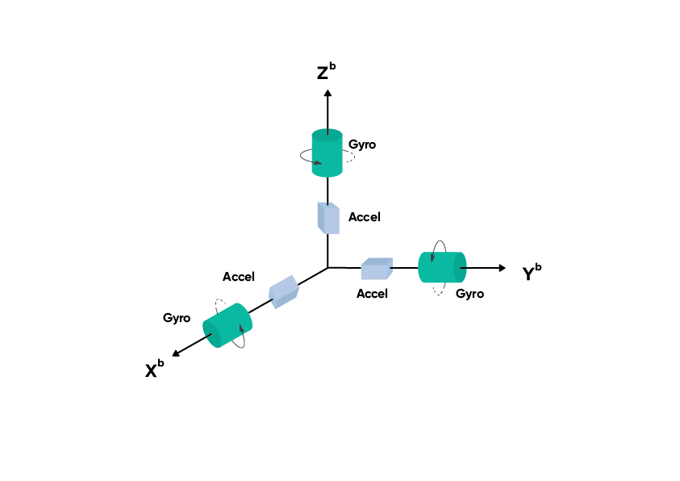

IMU Sensors: Data Collection and Processing
IMU sensors are widely used in robotics, wearables, smartphones, drones, and many embedded systems to measure motion and orientation. IMU stands for Inertial Measurement Unit, and it typically combines multiple sensors such as an accelerometer and a gyroscope, and sometimes a magnetometer.
In this post, I will cover the basic idea of IMU sensors, what kind of data they produce, and how that data can be collected and processed for practical use.
What is an IMU sensor
An IMU is a sensor module that measures the motion of an object in space. Depending on the sensor, it may provide:
- acceleration along the x, y, and z axes
- angular velocity around the x, y, and z axes
- magnetic field values along the x, y, and z axes
Based on the number of sensing components, IMUs are often described as:
- 6-axis IMU(IMU-6050): accelerometer + gyroscope
- 9-axis IMU(IMU-9250): accelerometer + gyroscope + magnetometer
These measurements help estimate movement, tilt, rotation, and orientation.

Typical IMU coordinate frame showing accelerometer and gyroscope axes.
Main components of an IMU
Accelerometer
The accelerometer measures linear acceleration along three axes. It detects both motion based acceleration and gravity. Because of this, it can also be used to estimate tilt when the sensor is stationary.
Example outputs:
- acceleration in x direction
- acceleration in y direction
- acceleration in z direction
Gyroscope
The gyroscope measures angular velocity, which tells how fast the sensor is rotating around each axis.
Example outputs:
- rotation around x axis
- rotation around y axis
- rotation around z axis
Gyroscope data is useful for tracking rotation, but over time it tends to drift if used alone.
Magnetometer
A magnetometer measures the surrounding magnetic field. It is commonly used as a digital compass to estimate heading relative to Earth’s magnetic field.
However, magnetometer readings are often noisy and can be affected by nearby metal objects or electronics.
What kind of data does an IMU generate
An IMU usually outputs time series data. At each timestamp, it provides values like:
ax, ay, azfor accelerationgx, gy, gzfor angular velocitymx, my, mzfor magnetic field, if available
A sample data row may look like:
Setup Configuration
To connect the MPU6050 IMU sensor with Raspberry Pi 3, communication is done using the I2C interface.
Wiring
| MPU6050 Pin | Raspberry Pi 3 Pin | GPIO Function |
|---|---|---|
| VCC | Pin 1 | 3.3V |
| GND | Pin 6 | GND |
| SDA | Pin 3 | GPIO2 / SDA |
| SCL | Pin 5 | GPIO3 / SCL |
Optional Pins
| MPU6050 Pin | Usage |
|---|---|
| XDA | Leave unconnected |
| XCL | Leave unconnected |
| AD0 | GND → 0x68, 3.3V → 0x69 |
| INT | Optional interrupt pin |
Important
Use 3.3V, not 5V, to avoid damaging the Raspberry Pi.
Data Collection
The following Python script reads accelerometer and gyroscope data from an MPU6050 IMU sensor and stores the readings in a CSV file.
from mpu6050 import mpu6050
import time
import csv
s = mpu6050(0x68)
filename = "imu_data.csv"
with open(filename, mode="w", newline="") as file:
writer = csv.writer(file)
writer.writerow([
"timestamp",
"accel_x", "accel_y", "accel_z",
"gyro_x", "gyro_y", "gyro_z"
])
try:
while True:
ac = s.get_accel_data()
gr = s.get_gyro_data()
ts = time.time()
writer.writerow([
ts,
ac['x'], ac['y'], ac['z'],
gr['x'], gr['y'], gr['z']
])
file.flush()
print(f"Accel: x={ac['x']:.2f}, y={ac['y']:.2f}, z={ac['z']:.2f}")
print(f"Gyro : x={gr['x']:.2f}, y={gr['y']:.2f}, z={gr['z']:.2f}")
print("." * 30)
time.sleep(0.5)
except KeyboardInterrupt:
print("Stopped by user")